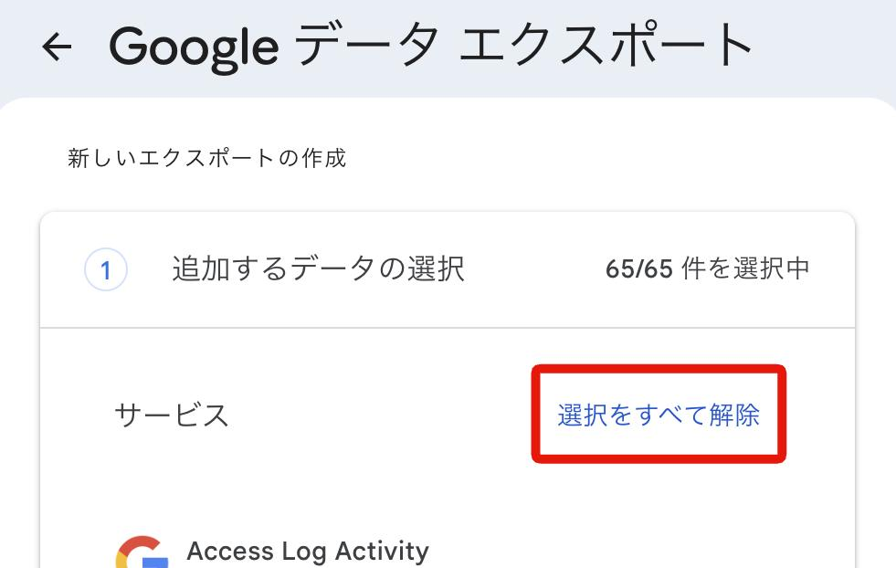
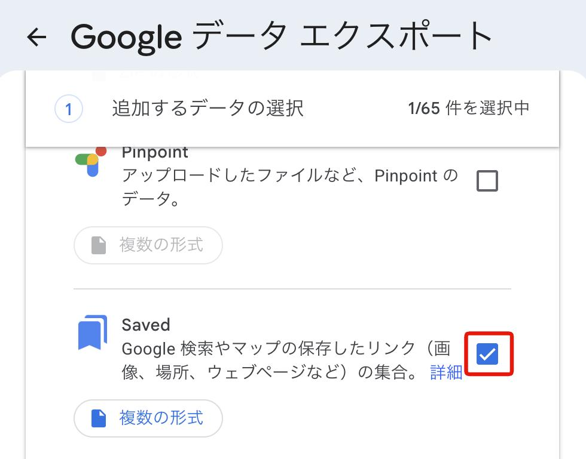

Google マップの保存済みスポットを取り込む
Google マップで保存したスポット（「行ってみたい」「お気に入り」などのリスト）は、Google Takeout で書き出したファイルを使って、cocodake にまとめて取り込めます。
2「選択をすべて解除」を押す
最初はすべてのデータが選択されています。まず選択をすべて外します。

3「Saved」だけにチェックを入れる
一覧を下にスクロールし、「Saved」にチェックを入れます。選択中が「1/◯件」になっていれば大丈夫です。

4エクスポートを作成する
画面下の「次のステップ」に進み、設定はそのままで「エクスポートを作成」を押します。準備ができると、ダウンロード用のリンクがメールで届きます（数分から数時間かかることがあります）。
5ダウンロードして解凍する
メールのリンクから zip ファイルをダウンロードして、解凍します。iPhone では「ファイル」アプリで zip をタップすると解凍できます。
6cocodake で読み込む
- アプリ: 「追加」タブ →「Takeoutファイル」→「ファイルを選択」
- Web: 「追加・インポート」→ ファイルをドロップ
解凍したフォルダの中にある、リストごとの CSV（例:「行ってみたい.csv」）または JSON を選びます。
よくある質問
同じファイルをもう一度取り込んでも大丈夫？
大丈夫です。すでにリストにある場所は追加されず、「重複 ◯件スキップ」と表示されます。
「座標取得失敗」と出た
ファイルに位置情報がない場所は、名前から Google マップで場所を探します。見つからなかった場所や、保存した場所と一致しなかった場所は取り込まれず、その件数が「座標取得失敗」として表示されます。
見つからなかった場所は完了メッセージの下に一覧で出ます。名前をタップして Google マップで開き、「共有」からリンクをコピーして「URL直接追加」に貼ると追加できることがあります。
取り込みに時間がかかる
位置情報のない場所が多いと、場所を探すのに時間がかかります。完了するまで画面を開いたままお待ちください。